പര〿ിസര〿പഠനം IV
3 ഒരു പിയുᩙ妓ട പാᨾ㺌് ᪔钢കൾᩔ和ി്䴴ുᩙ妓കാ്䵂ാണ⍍് അ്䵐് ടീ്䴴ർ ᩇ䞋ാസ് ത⑁ുട്䴲ിയത⑁്. കുᩏ侏ൂ.... കുᩏ侏ൂ.... കുᩏ侏ൂ.... “ഈ പാᨾ㺌് ന⡀ി്䴲ൾ ᪔钢കᨾ㺌ിᨾ㺌ു᪔钢്䵂ാ?” ടീ്䴴ർ ᪔钢ചᨿാദ☿ി്䴴ു.
48


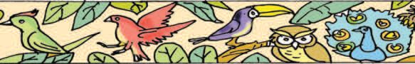
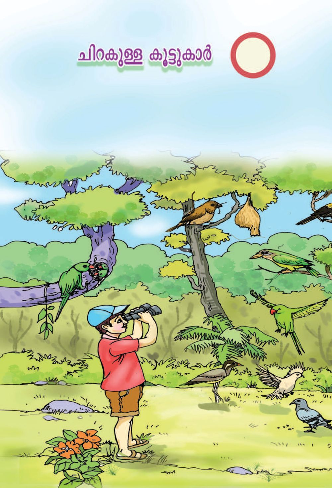
പര〿ിസര〿പഠനം IV
3 ഒരു പിയുᩙ妓ട പാᨾ㺌് ᪔钢കൾᩔ和ി്䴴ുᩙ妓കാ്䵂ാണ⍍് അ്䵐് ടീ്䴴ർ ᩇ䞋ാസ് ത⑁ുട്䴲ിയത⑁്. കുᩏ侏ൂ.... കുᩏ侏ൂ.... കുᩏ侏ൂ.... “ഈ പാᨾ㺌് ന⡀ി്䴲ൾ ᪔钢കᨾ㺌ിᨾ㺌ു᪔钢്䵂ാ?” ടീ്䴴ർ ᪔钢ചᨿാദ☿ി്䴴ു.
48


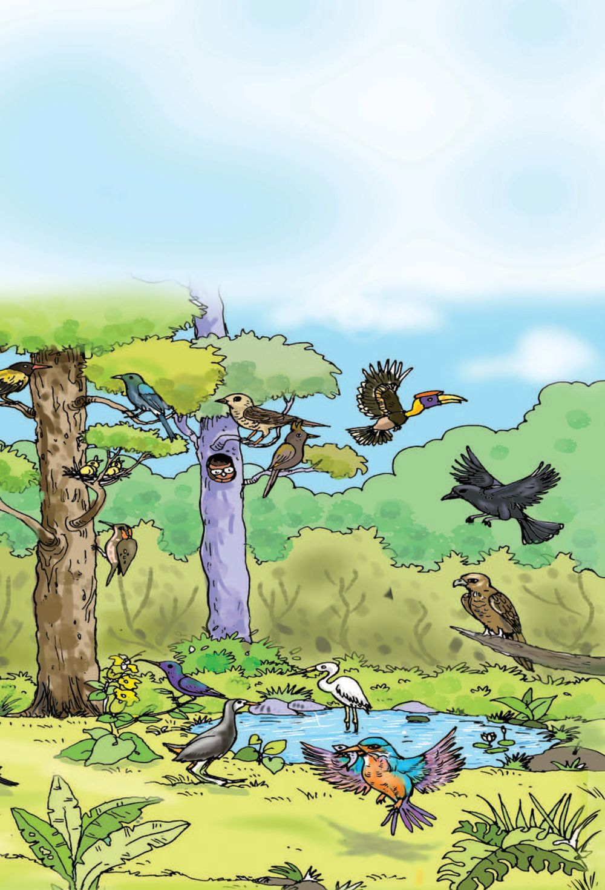
IV
പര〿ിസര〿പഠനം
“ഏത⑁ാണ⍍ീ പാᨾ㺌ുപാടു്䵐 പി? ആᩙ妓രᨮ⺌ില㈾ും ക്䵂ിᨾ㺌ു᪔钢്䵂ാ?” ᩇ䞋ാᩰ炌ില㈾ാᩙ妓ക ന⡀ിᩬ沏്䵒ത⑁.
“ചᨿി്䵐കുᨾ㺌ുറㄿുവ㔿ൻ എ്䵐ാണ⍍ത⑁ിᩙ妓 ᪔钢പര്”. അയാൻ പറㄿᨼ㲎ു. “ഈ പാᨾ㺌ുകാരൻ പിയുᩙ妓ട ന⡀ിറㄿᩙ妓മ്䵌ാണ⍍്?” “അത⑁ിᩙ妓 ന⡀ിറㄿം പ്䴴യാണ⍍്, ടീ്䴴ർ.” ഉᩈ䢌രം കᕈസറㄿയു᪔钢ടത⑁ായിരു്䵐ു. “ഈ പിᩙ妓യ ‘പ്䴴ില㈾ുടു’ എ്䵐ും വ㔿ിള㌿ിും. അ്䴲ᩙ妓ന⡀ വ㔿ിള㌿ി ാൻ കാരണ⍍ᩙ妓മ്䵌ായിരിും?” ടീ്䴴ർ ത⑁ുടർ്䵐ു.
49


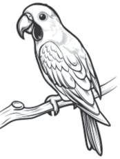
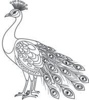
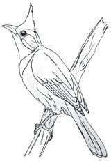
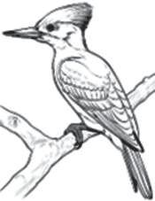
പര〿ിസര〿പഠനം IV പികൾ പല㈾ത⑁രമു്䵂᪔钢ാ. ഏᩙ妓ത⑁ം പികൾ ന⡀ി്䴲ള㌿ുᩙ妓ട ്䵚᪔钢ദ☿്䵥ᩈ䢌ു്䵂്? ന⡀ി്䴲ൾ് എ്䵔ᩙ妓യ്䵆ᩈ䢌ിᩙ妓 ᪔钢പരറㄿിയം? അവ㔿 എᩙ妓 പര〿ിസര〿പഠനപു്䵜കിൽ എു䄶ുത⑁ൂ.
നിറംനൽകി ഭⴾംഗിയ⼿ോᨪ⪎ൂ പികᩙ妓ള㌿ ത⑁ിരി്䴴റㄿിᨼ㲎് ᪔钢പᩙ妓രു䄶ുത⑁ൂ. ന⡀ിറㄿംന⡀ൽകി ഭⴿംഗിയാൂ.
ചᨿി്䵔ᩈ䢌ിᩙ妓ല㈾ പികൾ ഏᩙ妓ത⑁ം ത⑁രᩈ䢌ിൽ വ㔿യത⑁യാസᩙ妓ᩔ和ᨾ㺌ിരിു്䵐ു? ത⑁ൂവ㔿ല㈾ുകള㌿ുᩙ妓ട ന⡀ിറㄿᩈ䢌ിൽ ്䵥രീരᩈ䢌ിᩙ妓 ആകᕃത⑁ിയിൽ
തര〿ംതിര〿ിᨪ⪎ം ന⡀ᩜ岋ുᩙ妓ട ്䵚᪔钢ദ☿്䵥ᩈ䢌ു്䵦 പികള㌿ുᩙ妓ട ത⑁ൂവ㔿ല㈾ുകᩙ妓ള㌿ം ഒ᪔钢രന⡀ിറㄿᩈ䢌ില㈾ു ്䵦വ㔿യാ᪔钢ണ⍍ാ? ത⑁ൂവ㔿ല㈾ുകൾ് വ㔿യത⑁യᩜ岎ന⡀ിറㄿമു്䵦 പികᩙ妓ള㌿ ക്䵂ിᨾ㺌ി ᪔钢? ഏᩙ妓ത⑁ാമാണ⍍വ㔿? പᨾ㺌ികᩙ妓ᩔ和ടുᩈ䢌ൂ.
50


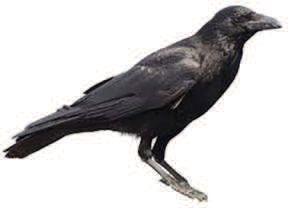
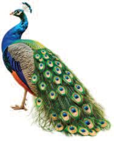
IV
പര〿ിസര〿പഠനം
ശര〿ീര〿ിൽ ഒᩈ䢘ര〿 നിറിലു്䵦 തൂവലു്䵦വ
ശര〿ീര〿ിൽ പല നിറ്䴲ള㍁ിലു്䵦 തൂവലു്䵦വ
കാ, ................................................ ................................................................ ...............................................................
മയിൽ, ............................................... ................................................................ ...............................................................
പികള㌿ുᩙ妓ട ᩙ妓പാത⑁ുവ㔿ായ ്䵚᪔钢ത⑁യകത⑁കᩙ妓ള㌿ᩙ妓്䵌ാമാണ⍍്? പരിസരം ന⡀ിരീി്䴴് വ㔿യത⑁യᩜ岎പികള㌿ുᩙ妓ട സവ㔿ി᪔钢്䵥ഷത⑁കൾ കᩙ妓്䵂 ᩈ䢌ം. പിᩙ妓യ ന⡀ിരീിു᪔钢ാൾ കᕈബ᪔钢ന⡀ാുല㈾ർസ് ല㈾ഭⴿയᩙ妓മᨮ⺌ിൽ ഉപ ᪔钢യാഗിാൻ മറㄿരു᪔钢ത⑁. എᩙ妓്䵌ം കാരയ്䴲ൾ ന⡀ിരീിണ⍍ം?
പി കാണ⍍ᩙ妓ᩔ和ടു്䵐 ᩝ嶋ല㈾ം ക്䵂 സമയം വ㔿ല㈾ുᩔ和ം ന⡀ിറㄿം കൂട് ്䵥്䵒ം കാല㈾ുകള㌿ുᩙ妓ട ന⡀ിറㄿം, വ㔿ിരല㈾ുകള㌿ുᩙ妓ട എ്䵆ം, വ㔿ല㈾ുᩔ和ം, ന⡀ീള㌿ം ക്䵆ുകള㌿ുᩙ妓ട വ㔿ല㈾ുᩔ和ം, ന⡀ിറㄿം ത⑁ൂവ㔿ല㈾ുകള㌿ുᩙ妓ട ്䵚᪔钢ത⑁യകത⑁ പറㄿു്䵐 രീത⑁ി
51


പര〿ിസര〿പഠനം IV ന⡀ി്䴲ള㌿ുᩙ妓ട പരിസരᩈ䢌ു്䵦 ഏᩙ妓ത⑁ᨮ⺌ില㈾ും ഒരു പിᩙ妓യ ന⡀ിരീി്䴴് അത⑁ിᩙ妓 ്䵚᪔钢ത⑁യകത⑁കൾ ഉൾᩙ妓ᩔ和ടുᩈ䢌ി കുറㄿിᩔ和് ത⑁ᩞ庎ാറㄿാൂ. ചᨿി്䵔ം വ㔿ര ❙姘ാന⡀ും മറㄿരു᪔钢ത⑁. ന⡀ിരീണ⍍ുറㄿിᩔ和ിൽ എᩙ妓്䵌ം ഉൾᩙ妓ᩔ和ടുᩈ䢌ണ⍍ം? കᕈസറㄿയുᩙ妓ട ന⡀ിരീ ണ⍍ുറㄿിᩔ和് ᪔钢ന⡀ാൂ.
നിര〿ീ്䵌ണ⍍ᨪ⪎ുറി്䵔് പ്䵌ിയ⼿ുᩙ妓ട ᩈ䢘പര〿്
: ത
ക്䵂 ᩝ嶋ലം
: വയ⼿ൽവര〿ᩘ墚്
ക്䵂 സമ⹗യ⼿ം
: വ㕈വകുᩈ䢘്䵐ര〿ം
നിറം
: പ്䴴
ചᨿു്䵂ിᩙ妓 സവിᩈ䢘ശഷത : കൂർു വള㍁്䴼തും ചᨿുവ്䵐 നിറിലു്䵦തും കോലുകള㍁ുᩙ妓ട ്䵚ᩈ䢘തയകത : മ⹗ര〿ിൽ കയ⼿റോനും ഭⴾ്䵌ണ⍍ം മ⹗ുറുᩙ妓ക്䵔ിടിᨪ⪎ോനും ഉപകര〿ിᨪ⪎ു്䵐 ᩙ妓മ⹗ലി്䴼 കോലുകൾ വോലിᩙ妓 സവിᩈ䢘ശഷത : ᩔ和ിᩈ䢘കോണ⍍ോകᕃതിയ⼿ിലു്䵦 നീ്䵂 വോൽ മ⹗ᩢ抎ു സവിᩈ䢘ശഷതകൾ
: ● ●
കുിൽ ᩈ䢘റോസ് നിറിലു്䵦 വള㍁യ⼿മ⹗ു്䵂് മ⹗ര〿ᩙ妓്䵔ോിൽ മ⹗ുᨾ㺚യ⼿ിടു്䵐ു
പൂർിയ⼿ോᨪ⪎ം ഏ蹤വ㔿ും വ㔿ല㈾ിയ പി....................................................................................... പിറㄿ᪔钢കാᨾ㺌് പറㄿു്䵐 പി .......................................................................... ഏ蹤വ㔿ും ഉയരᩈ䢌ിൽ പറㄿു്䵐 പി ..................................................... പറㄿാᩈ䢌 പികൾ ...................................................................................... ഏ蹤വ㔿ും ᩙ妓ചᨿറㄿിയ പി ................................................................................... 52


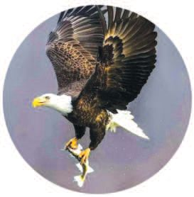
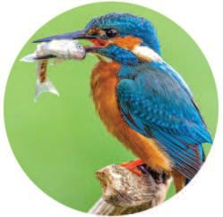
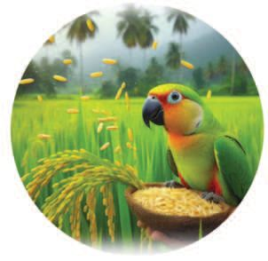
IV
പര〿ിസര〿പഠനം
ആഹ㤾ോര〿ം പലവിധ✂ം എി踬ം കിᨾ㺌ി മ⹁ംഴ㑁ം്䵈 മ⹁ീംകൾ.
എ᪬겓 ഭ്䵌ണ⌂ം ഈ ᪬겓്䵖ണ⌂ികള㌾ാ...
ഇ്䵐᪬겓്䵈 ഭ്䵌ണ⌂ം കംശ㘾ാൽ .
എാ പികള㌿ുᩙ妓ടയും ആഹാരം ഒരു᪔钢പാᩙ妓ല㈾യാ᪔钢ണ⍍ാ? പ്䵌ി
ആഹ㤾ോര〿ം
ത⑁ᩈ䢌
ധാന⡀യ്䴲ൾ, ........................................................................
ᩙ妓പാᩖ嚋ാൻ
മ്䵜യം, .................................................................................
പരു്䵌്
..................................................................................................
.......................................... .................................................................................................. .......................................... .................................................................................................. .......................................... ..................................................................................................
53


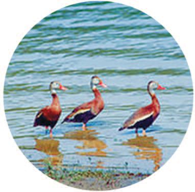
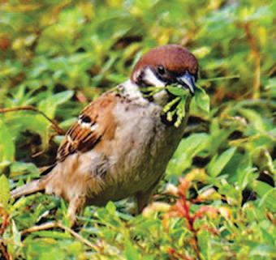
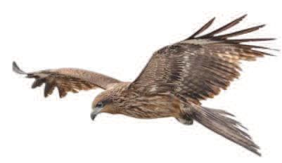
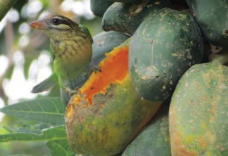
പര〿ിസര〿പഠനം IV ജലസോ്䵐ിധ✂യമ⹗ു്䵦 ്䵚ᩈ䢘ദ☿ശ്䴲ള㍁ിലോണ⍍് ഞ്䴲ൾ ഇര〿 ᩈ䢘തടു്䵐ത്.
ഇര〿ᩙ妓യ⼿ റോᨸ㢌ി്䵔ിടിᨪ⪎ോനോണ⍍് എനിᨪ⪎ിᩖ噏ം.
പുൽവിുകള㍁ും ധ✂ോനയമ⹗ണ⍍ികള㍁ും ᩙ妓കോിി്䵐ു്䵐തോണ⍍് എനിᨪ⪎ിᩖ噏ം.
പ്䴲ൾ തി്䵐ു്䵐വര〿ുᩙ妓ട കൂᨾ㺚ിലോ ഞോൻ.
54


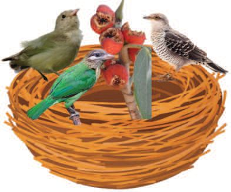
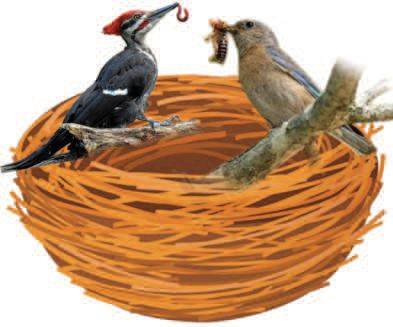
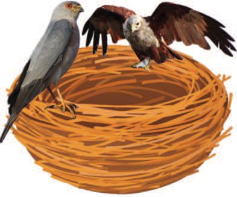
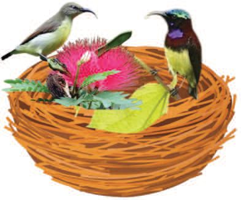
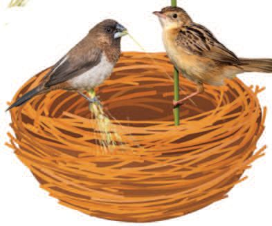
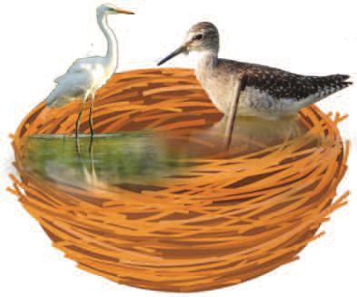
IV
പര〿ിസര〿പഠനം
എᩙ妓ത⑁ം ഭⴿണ⍍്䴲ള㌿ാണ⍍് ഓ᪔钢രാ പിയും ഭⴿിാറㄿു്䵦ത⑁്? അവ㔿 കᩙ妓്䵂ᩈ䢌ിᩙ妓യു䄶ുത⑁ൂ. കൂടുത⑁ൽ പികള㌿ുᩙ妓ട ᪔钢പരുകൾ കൂടുകള㌿ിൽ ഉൾ ᩙ妓ᩔ和ടുᩈ䢌ൂ.
...................................................
ᩈ䢘തൻ നുകര〿ു്䵐വർ ................................................
......................................................... ......................................................... ....................................
......................................................... ....................................
.....................................................
...................................................
കᕈമന⡀, ........................................... ........................................................... ....................................
......................................................... ......................................................... ....................................
...................................................
....................................................
......................................................... ......................................................... ....................................
ᩙ妓കാ്, ......................................... ......................................................... ....................................
55


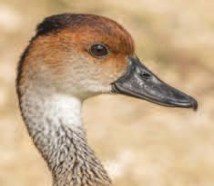
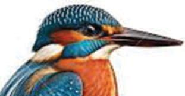
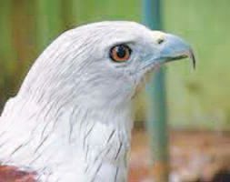
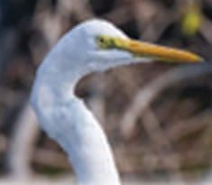
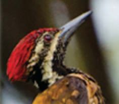
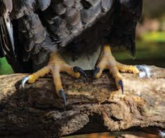
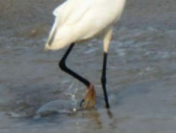
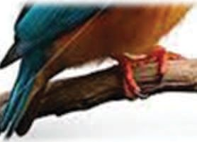
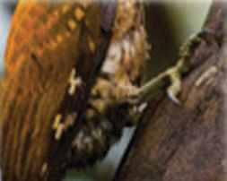
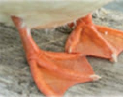
പര〿ിസര〿പഠനം IV എാ കൂᨾ㺌ി᪔钢ല㈾യും പികള㌿ുᩙ妓ട വ㔿ല㈾ുᩔ和വ㔿ും ്䵥രീരഘടന⡀യും ഒരു᪔钢പാ ᩙ妓ല㈾യാ᪔钢ണ⍍ാ? ആഹാരസാദ☿ന⡀ᩈ䢌ിന⡀് പികൾു്䵦 അന⡀ുകൂല㈾ന⡀ ്䴲ൾ എᩙ妓്䵌ാമാണ⍍്? എു䄶ുത⑁ി᪔钢ന⡀ാൂ.
വര〿്䴴ു ᩈ䢘ചᨿർᨪ⪎ം
ഓ᪔钢രാ പിയുᩙ妓ടയും ചᨿു്䵂ും കാല㈾ും ത⑁ᩜ岋ിൽ ᪔钢യാജ᰿ിᩔ和ിൂ.
56


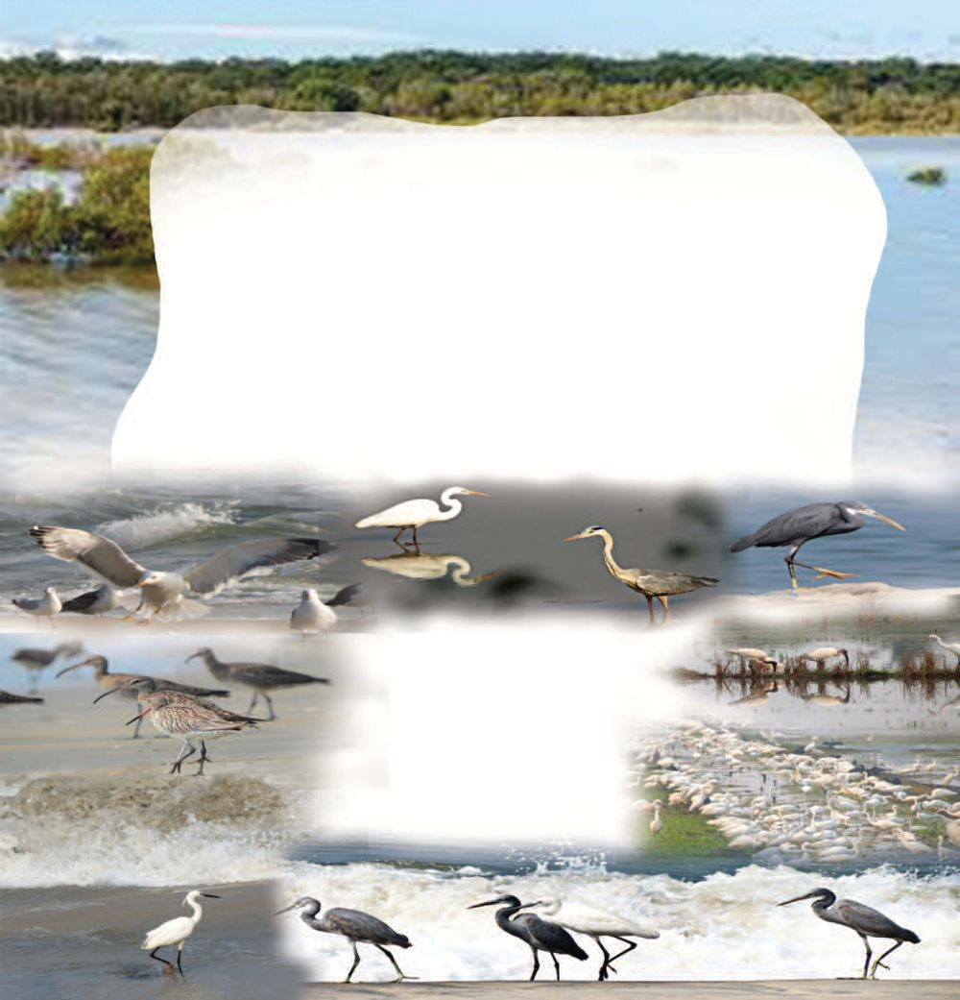
IV
പര〿ിസര〿പഠനം
പ്䵌ികള㍁ും വോസᩝ嶋ല്䴲ള㍁ും
പികᩙ妓ള㌿ ന⡀മു് എവ㔿ിᩙ妓ടം കാണ⍍ാന⡀ാവ㔿ും? കുള㌿രയിൽ ജ᰿ല㈾മു്䵦 ᩝ嶋ല㈾്䴲ള㌿ിൽ കാണ⍍ᩙ妓ᩔ和ടു്䵐 പികൾ ഏᩙ妓ത⑁ം? .......................................................................................................................................... അവ㔿യുᩙ妓ട സവ㔿ി᪔钢്䵥ഷത⑁കൾ എᩙ妓്䵌ാമാണ⍍്? ന⡀ീ്䵂 കാല㈾ുകൾ
എാ പികള㌿ുᩙ妓ടയും ്䵥രീരഘടന⡀ ഒരു᪔钢പാᩙ妓ല㈾യ. ചᨿില㈾ത⑁ിന⡀് ന⡀ീ്䵂ുകൂർᩈ䢌 ᩙ妓കാുകള㌿ും ന⡀ീ്䵂 കാല㈾ുക ള㌿ുമു്䵂്. ആഹാരസാദ☿ന⡀രീത⑁ിയും സ്䴸ാരരീത⑁ിയും പിക ള㌿ുᩙ妓ട ്䵥രീരഘടന⡀യുമായി ബᩏ侌ᩙ妓ᩔ和ᨾ㺌ിരിു്䵐ു. ജ᰿ല㈾മു്䵦 ᩝ嶋ല㈾്䴲ള㌿ിൽ ഇര᪔钢ത⑁ടു്䵐 പികൾ് എ്䵆മയമു്䵦 ത⑁ൂവ㔿ല㈾ുകള㌿ു്䵂ായിരിും.
നിശോസᨸ㢌ോര〿ികൾ
പകലുറᨪ⪎ംകി്䴼് ര〿ോᩔ和ി ഇര〿ᩈ䢘തടു്䵐വര〿ോണ⍍് മ⹗ൂ്䴲കൾ. ര〿ോᩔ和ി ഇര〿ᩈ䢘തടോൻ ഉതകു്䵐തും പറ ᨪ⪎ുᩈ䢘ᩘ墚ോൾ ശ്䵒മ⹗ു്䵂ോᨪ⪎ോതുമ⹗ോയ⼿ തൂവൽ ᨪ⪎ു്䵔ോയ⼿മ⹗ോണ⍍് ഇവ❙姛ു്䵦ത്. ᩙ妓ചᨿറുജീവികᩙ妓ള㍁ പിടികൂടു്䵐 കോᨾ㺚ുമ⹗ൂ്䴲, എലികᩙ妓ള㍁യ⼿ും ᩙ妓പര〿ു ്䴴ോികᩙ妓ള㍁യ⼿ും തി്䵐ു്䵐 ᩙ妓വ്䵦ിമ⹗ൂ്䴲, മ⹗ീനുകᩙ妓ള㍁ ᩈ䢘വᨾ㺚യ⼿ോടു്䵐 മ⹗ീൻകൂമ⹗ൻ, ചᨿുᩙ妓്䵂ലിᩙ妓യ⼿ ഭⴾ്䵌ിᨪ⪎ു്䵐 നുകൾ ഇവ ᩙ妓യ⼿ോᩙ妓ᨪ⪎ ര〿ോᩔ和ിസᨸ㢌ോര〿ികള㍁ോണ⍍്. 57


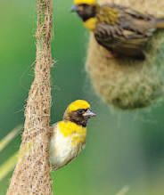
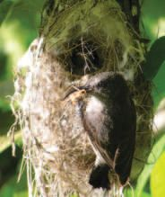
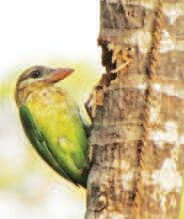
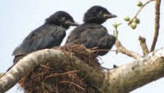
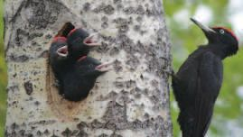
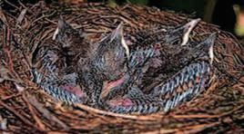
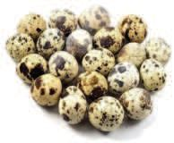
പര〿ിസര〿പഠനം IV
പ്䵌ികള㍁ും കൂടുകള㍁ും ന⡀മുു ചᨿു蹤ുമു്䵦 പികള㌿ുᩙ妓ട കൂടുകൾ ്䵦ᩍ䶌ി്䴴ിᨾ㺌ു്䵂ാകുമ᪔钢ാ. ഏᩙ妓ത⑁ം ത⑁രᩈ䢌ിൽ കൂടുകൾ വ㔿യത⑁യാസᩙ妓ᩔ和ᨾ㺌ിരിു്䵐ുᩙ妓വ㔿്䵐് കᩙ妓്䵂ᩈ䢌ി പൂർᩈ䢌ിയാൂ.
കാണ⍍ᩙ妓ᩔ和ടു്䵐 ᩝ嶋ല㈾്䴲ൾ
ന⡀ിർᩜ岋ാണ⍍ വ㔿ᩜ岎ുൾ
കൂട്
മ⹗ുᨾ㺚കൾ പലതര〿ം ചᨿി്䵔ം ന⡀ിരീിൂ. മുᨾ㺌കൾ ഏത⑁ു പികള㌿ുᩙ妓ടᩙ妓ത⑁്䵐് ചᨿുവ㔿ᩙ妓ട കുറㄿിൂ.
58


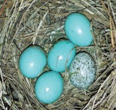
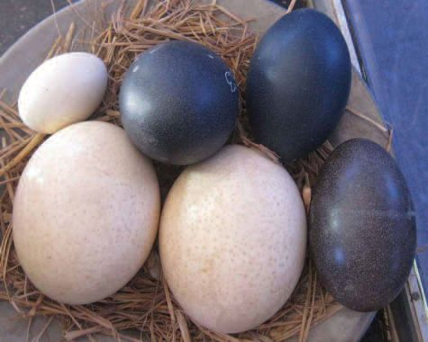
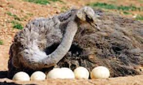
IV
പര〿ിസര〿പഠനം
എമു ത⑁ാറㄿാവ㔿്
ഒᨾ㺌കᩔ和ി
കാ കുയിൽ പികള㌿ുᩙ妓ട മുᨾ㺌കൾ ഏᩙ妓ത⑁ം രീത⑁ിയിൽ വ㔿യത⑁യാസᩙ妓ᩔ和ᨾ㺌ിരിു്䵐ു? വ㔿ല㈾ുᩔ和ം വ㔿യത⑁യᩜ岎 പികള㌿ുᩙ妓ടയും അവ㔿യുᩙ妓ട കൂടുകള㌿ുᩙ妓ടയും മുᨾ㺌കള㌿ുᩙ妓ടയും ചᨿി്䵔 ്䴲ൾ ᪔钢്䵥ഖരി്䴴് സവ㔿ി᪔钢്䵥ഷത⑁കൾ കᩙ妓്䵂ᩈ䢌ി പത⑁ിᩔ和് ന⡀ിർᩜ岋ിൂ. പ്䵌ികള㍁ുᩙ妓ട കൂടുകള㍁ുᩙ妓ട ആകᕃതി, വലു്䵔ം, നിർᩜ岍ോണ⍍വ്䵜ു ᨪ⪎ൾ, കൂടു്䵂ോᨪ⪎ു്䵐 ᩝ嶋ലം, കൂടു്䵂ോᨪ⪎ു്䵐 ര〿ീതി, മ⹗ുᨾ㺚കൾ എ്䵐ിവയ⼿ിൽ വ㕈വവിധ✂യമ⹗ു്䵂്.
ഒᨾ㺚ക്䵔്䵌ിയ⼿ും മ⹗ുᨾ㺚യ⼿ും ᩈ䢘ലോകിൽ ഇ്䵐് ജീവി്䴴ിര〿ിᨪ⪎ു്䵐 തിൽ ഏᩢ抎വും വലിയ⼿ പ്䵌ിയ⼿ോയ⼿ ഒᨾ㺚ക ്䵔്䵌ിയ⼿ുᩙ妓ട മ⹗ുᨾ㺚യ⼿ോണ⍍് ഏᩢ抎വും വലിയ⼿ മ⹗ുᨾ㺚. ചᨿിറകുᩙ妓്䵂ᨮ⺌ിലും പറᨪ⪎ോൻ കിയ⼿ോ ഒᨾ㺚ക്䵔്䵌ിയ⼿ുᩙ妓ട മ⹗ുᨾ㺚❙姛് ഏകᩈ䢘ദ☿ശം ഒ്䵐ര〿 കിᩈ䢘ലോ證ം ഭⴾോര〿മ⹗ു്䵂ോകും. മ⹗ോᩔ和മ⹗്䵤 കര〿യ⼿ിᩙ妓ല ജീവികള㍁ിൽ ഏᩢ抎വും വലിയ⼿ ക蹈ും ഒᨾ㺚ക്䵔്䵌ിയ⼿ുᩙ妓ടതോണ⍍്. 59

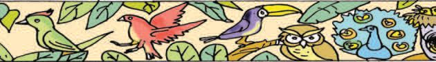

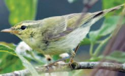
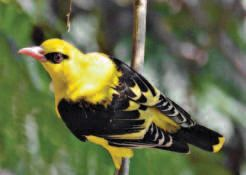
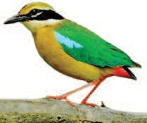
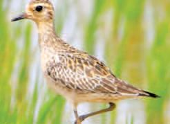
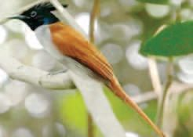
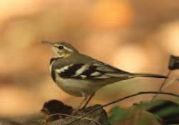
പര〿ിസര〿പഠനം IV
ᩈ䢘ദ☿ശോടന്䵔്䵌ികൾ
കടുംപ്䴴ᩙ妓്䵔ോടികുര〿ുവി
കോവി
നോകᩈ䢘മ⹗ോഹ㤾ൻ
മ⹗്䴼ᨪ⪎ിള㍁ി
ᩙ妓പോ്䵖ണ⍍ൽᩈ䢘ᨪ⪎ോി
കോᨾ㺚ുവോലുകുലുᨪ⪎ി
ചᨿി്䵔ᩈ䢌ിൽ കാണ⍍ു്䵐 പികᩙ妓ള㌿ ന⡀ം എ᪔钢ᩔ和ാു䄶ും കാണ⍍ാറㄿു᪔钢്䵂ാ? ഇവ㔿യുᩙ妓ട ്䵥്䵒ം എ᪔钢ᩔ和ാു䄶ും ᪔钢കൾാറㄿു᪔钢്䵂ാ? എ്䵌ായിരിം കാരണ⍍ം? ്䵚തികൂലകോലോവᩝ嶋യ⼿ിൽ നി്䵐ു്䵦 ര〿്䵌❙姛ും ഭⴾ്䵌ണ⍍ിനും ്䵚ജനനിനുംᩈ䢘വ്䵂ി ചᨿിലയ⼿ിനം പ്䵌ികൾ കൂᨾ㺚ᩈ䢘ോᩙ妓ട ഒര〿ു ᩈ䢘ദ☿ശുനി്䵐് മ⹗ᩙ妓ᩢ抎ോര〿ു ᩈ䢘ദ☿ശᩙ妓ു്䵐ു. കോലോവᩝ嶋 അനു കൂലമ⹗ോകുᩈ䢘ᩘ墚ോൾ അവ തിര〿ി്䴴ു സᨸ㢌ര〿ിᨪ⪎ുകയ⼿ും ᩙ妓ചᨿᩞ庎ു്䵐ു. ഇര〿ം പ്䵌ികള㍁ോണ⍍് ᩈ䢘ദ☿ശോടന്䵔്䵌ികൾ. കൂടുത⑁ൽ ᪔钢ദ☿്䵥ാടന⡀ᩔ和ികള㌿ുᩙ妓ട ᪔钢പരുകൾ അ᪔钢ന⡀ാഷി്䴴ു കᩙ妓്䵂ᩈ䢌ിᩙ妓യ ു䄶ുത⑁ൂ. ചᨿി്䵔്䴲ൾ ᪔钢്䵥ഖരി്䴴് പര〿ിസര〿മ⹗ൂലയ⼿ിᩙ妓ല ᩈ䢘ബⰾർഡ്ᩈ䢘കോർണ⍍റിൽ ഒᨾ㺌ിൂ.
60


IV
പര〿ിസര〿പഠനം
പ്䵌ികള㍁ും പര〿ിᩝ嶋ിതിയ⼿ും ചᨿില㈾ ᩙ妓കᨾ㺌ിട്䴲ള㌿ുᩙ妓ട മുകള㌿ിൽ ആൽമരം വ㔿ള㌿ർ്䵐ുവ㔿രു്䵐ത⑁് ന⡀ി്䴲ൾ ്䵦ᩍ䶌ി്䴴ിᨾ㺌ു᪔钢്䵂ാ? അവ㔿യാ ᩙ妓രᨮ⺌ില㈾ും ന⡀ᨾ㺌ുവ㔿ള㌿ർᩈ䢌ിയത⑁ാ᪔钢ണ⍍ാ? പികᩙ妓ള㌿ᩙ妓ാ്䵂ു്䵦 ്䵚᪔钢യാജ᰿ന⡀ ്䴲ൾ എᩙ妓്䵌ം? വ㔿ിᩈ䢌ുവ㔿ിത⑁രണ⍍ം
ദ☿ോഹ㤾ജലം ᩈ䢘തടി ന⡀ീരുറㄿവ㔿കള㌿ും ജ᰿ല㈾ാ്䵥യ്䴲ള㌿ും വ㔿蹤ിവ㔿രള㌿ു്䵐 ᪔钢വ㔿ന⡀ല㈾ിൽ പികള㌿ും മ⹃ഗ്䴲ള㌿ും ദ☿ാഹമക蹤ു്䵐ത⑁് എ്䴲ᩙ妓ന⡀യായിരിും? ᩈ䢘വനലിᩙ妓ല ᩙ妓കോടുംചᨿൂടിᩙ妓ന യ⼿ും വര〿ൾ്䴴ᩙ妓യ⼿യ⼿ും അതിജീ വിᨪ⪎ു്䵐തിനോയ⼿ി പ്䵌ികൾ ᨪ⪎് ദ☿ോഹ㤾ജലം ഒര〿ുᨪ⪎ോവു്䵐തോണ⍍്. ഇതിനോയ⼿ി മ⹗ര〿ിᩈ䢘ലോ മ⹗ര〿 ണ⍍ലിᩈ䢘ലോ മ⹗ᩢ抎ു തുറᩰ炋ോയ⼿ ᩝ嶋ല്䴲ള㍁ിᩈ䢘ലോ മ⹗ൺപോᩔ和്䴲ള㍁ിൽ ᩙ妓വ്䵦ം ഒി്䴴ുവ❙姛ം. ᩙ妓കോതുകു മ⹗ുᨾ㺚യ⼿ിടോതിര〿ിᨪ⪎ോനോയ⼿ി ഇട❙姛ിᩙ妓ട ᩙ妓വ്䵦ം മ⹗ോᩢ抎ോൻ ്䵦ᩍ䶌ിᨪ⪎ᩈ䢘ണ⍍... പികൾ് ജ᰿ല㈾വ㔿ും ആഹാരവ㔿ും ല㈾ഭⴿയമാു്䵐ത⑁ിന⡀ു്䵦 ഒരിടം ന⡀ി്䴲ള㌿ുᩙ妓ട ᩍ䶏ൂള㌿ില㈾ും ഒരുൂ.
61


പര〿ിസര〿പഠനം IV
മ⹗ലമ⹗ുᨪ⪎ിᩈ䢘വോᩘ墚ൽ വംശനോശഭⴾീഷണ⍍ിയ⼿ിᩈ䢘ലᨪ⪎്... ‘കോᨾ㺚ിᩙ妓ല കർഷകൻ’ എ്䵐 അപരന⡀ാമ ᩈ䢌ിൽ അറㄿിയᩙ妓ᩔ和ടു്䵐 ᪔钢കരള㌿ᩈ䢌ിᩙ妓 ഔ᪔钢ദ☿യാഗികപിയായ മല㈾മു䄶ി ᪔钢വ㔿ു䄶ാൽ വ㔿ം്䵥ന⡀ാ്䵥ഭⴿീഷണ⍍ിയില㈾ാണ⍍്.
മല㈾മു䄶ി ᪔钢വ㔿ു䄶ാൽ, അ്䴲ാടിുരുവ㔿ി ത⑁ുട്䴲ിയ പികള㌿ുᩙ妓ട എ്䵆ᩈ䢌ിൽ ഇ᪔钢ᩔ和ാൾ കുറㄿവ㔿് വ㔿്䵐ുᩙ妓കാ്䵂ിരിു്䵐ു. കാരണ⍍ᩙ妓മ്䵌ായി രിം? ഭⴿണ⍍സാധന⡀്䴲ള㌿ുᩙ妓ട ല㈾ഭⴿയത⑁ുറㄿവ㔿് ഉയരംകൂടിയ വ㕃്䴲ള㌿ുᩙ妓ട അഭⴿാവ㔿ം മന⡀ുഷയസാമീപയം
വംശനോശം സംഭⴾവി്䴴ുᩙ妓കോ്䵂ിര〿ിᨪ⪎ു്䵐 ജീവികᩙ妓ള㍁്䵔ᩢ抎ി ്䵚തിപോ ദ☿ിᨪ⪎ു്䵐 പു്䵜കമ⹗ോണ⍍് ‘ᩙ妓റഡ് ᩈ䢘ഡᩢ抎ോ ബⰾുᨪ⪎് ’ (Red Data Book). വ㔿ം്䵥ന⡀ാ്䵥ഭⴿീഷണ⍍ി ᪔钢ന⡀രിടു്䵐 ᪔钢കരള㌿ᩈ䢌ിᩙ妓ല㈾ മ蹤ു പികള㌿ുᩙ妓ട ᪔钢പരുകൾ കᩙ妓്䵂ᩈ䢌ി ‘എᩙ妓 പര〿ിസര〿പഠനപു്䵜കിൽ’ എു䄶ുത⑁ൂ. ചᨿി്䵔്䴲ൾ ᪔钢്䵥ഖരി്䴴് ആൽബം ത⑁ᩞ庎ാറㄿാൂ. 62

IV
പര〿ിസര〿പഠനം
പ്䵌ിനിര〿ീ്䵌കർ സല㈾ിമിന⡀് പᩈ䢌ുവ㔿യസു്䵦᪔钢ᩔ和ാൾ അᩜ岋ാവ㔿ൻ സᩜ岋ാന⡀മായി ന⡀ൽകിയ എയർഗൺ ഉപ᪔钢യാഗി്䴴് മᨼ㲎 ᩈ䢌ാല㈾ി എ്䵐 ഒരു കുരുവ㔿ിᩙ妓യ ᩙ妓വ㔿 ടിᩙ妓വ㔿്䴴ിᨾ㺌ു. സല㈾ിമും അᩜ岋ാവ㔿ന⡀ും ഈ കുരുവ㔿ിയുമായി അᩜ岋ാവ㔿ᩙ妓 സുഹ㥃ᩈ䢌ായ, ᪔钢ബംᩙ妓ബ (മുംകᕈബ) ന⡀ാ്䴴ുറㄿൽ ഹിറㄿി ᩙ妓സാകᕈസ蹤ി ഉ᪔钢ദ☿യാഗᩝ嶋ന⡀ായ ഡബയു. എസ്. മില㈾ാഡിᩙ妓ന⡀ സ്䵎ർ്䵥ിുകയു്䵂ാ യി. അ᪔钢ഹം ᩙ妓സാകᕈസ蹤ിയിൽ സംᩍ䶏രി്䴴ു സൂി്䴴ിരു്䵐 പി കള㌿ുᩙ妓ട ᪔钢്䵥ഖരം സല㈾ിമിᩙ妓ന⡀ പരിചᨿ യᩙ妓ᩔ和ടുᩈ䢌ി. അത⑁ിൽ സല㈾ിം ᩙ妓വ㔿ടി ᩙ妓വ㔿്䴴ിᨾ㺌 മᨼ㲎ᩈ䢌ാല㈾ിᩙ妓യ᪔钢ᩔ和ാല㈾ു്䵦 കുരുവ㔿ികള㌿ും ഉ്䵂ായിരു്䵐ു. ഈ സ്䵎ർ്䵥ന⡀ം പി്䵐ീട് അ᪔钢ഹᩙ妓ᩈ䢌 ഒരു പി᪔钢്䵚മിയാി മാ蹤ി.
᪔钢ഡാ. സല㈾ിം അല㈾ി
ഇ്䵌യ ക്䵂 ഏ蹤വ㔿ും വ㔿ല㈾ിയ പിന⡀ിരീകന⡀ായ ᪔钢ഡാ. സല㈾ിം അല㈾ിയുᩙ妓ട ജ᰿ീവ㔿ിത⑁ᩙ妓ᩈ䢌ുറㄿി്䴴ു്䵦ത⑁ാണ⍍ിത⑁്. ഇ᪔钢ഹᩈ䢌ിᩙ妓 ജ᰿ᩖ嚋ദ☿ിന⡀മായ നവംബⰾർ 12 ᪔钢ദ☿്䵥ീയ പിന⡀ിരീണ⍍ ദ☿ിന⡀മായി ന⡀ം ആ᪔钢ഘാഷിു്䵐ു. മ᪔钢蹤ᩙ妓ത⑁ം പിന⡀ിരീകᩙ妓ര ന⡀ി്䴲ൾറㄿിയം? കൂടുത⑁ൽ വ㔿ിവ㔿ര്䴲ൾ കᩙ妓്䵂ᩈ䢌ിᩙ妓യു䄶ുത⑁ൂ.
ᩙ妓ക.ᩙ妓ക.നീലക്䵃ൻ എ്䵐 ഇᩎ于ുചᨿൂഡൻ
ᩈ䢘ഡോ. ആർ.സുഗതൻ 63


പര〿ിസര〿പഠനം IV പ്䵌ികᩙ妓ള㍁ᨪ⪎ുറി്䴴ു്䵦 പഠനവുമ⹗ോയ⼿ി ബⰾ്䵏ᩙ妓്䵔ᨾ㺚 ശോ验ശോഖയ⼿ോണ⍍് പ്䵌ിശോ验ം (Ornithology).
പ്䵌ിസᩈ䢘ᨮ⺌തം ᪔钢ഡാ. സല㈾ിം അല㈾ിയുᩙ妓ട ᪔钢പരിൽ ᪔钢കരള㌿ᩈ䢌ില㈾ു്䵦 പിസ᪔钢ᨮ⺌ത⑁മാണ⍍് ത⑁᪔钢ᨾ㺌ാട് പിസ᪔钢ᨮ⺌ത⑁ം. മ᪔钢蹤ᩙ妓ത⑁ം പിസ᪔钢ᨮ⺌ത⑁്䴲ᩙ妓ള㌿ുറㄿി്䴴് ന⡀ി്䴲ൾറㄿിയം? പദ്䵚ᩞ幏ം പൂർᩈ䢌ിയ⼾ാᨪ⪏ൂ. 1
കു
3
ത⑁
4
2
ചᨿൂ
മം ള㌿ 5
ല㈾ു
വലᩈ䢘ᩈ䢌ാᨾ㺚് 1.
᪔钢കാᨾ㺌യം ജ᰿ിയിᩙ妓ല㈾ ഒരു പിസ᪔钢ᨮ⺌ത⑁ം.
2.
᪔钢കരള㌿ᩈ䢌ിᩙ妓ല㈾ ഏക മയിൽസംരണ⍍᪔钢ക❾纜ം.
താᩈ䢘ാᨾ㺚് 3.
᪔钢ഡാ. സല㈾ിം അല㈾ി പിസ᪔钢ᨮ⺌ത⑁ം എ്䵐 ᪔钢പരില㈾റㄿിയᩙ妓ᩔ和ടു്䵐ത⑁്.
4.
ക്䵂ൽവ㔿ന⡀്䴲ള㌿ിൽ ᩝ嶋ിത⑁ിᩙ妓ചᨿᩞ庎ു്䵐 ᪔钢കരള㌿ᩈ䢌ിᩙ妓ല㈾ ഏക പിസ ᪔钢ᨮ⺌ത⑁ം
᪔钢ദ☿്䵥ാടന⡀ᩔ和ികᩙ妓ള㌿ കൂടുത⑁ല㈾ായി കാണ⍍ു്䵐 ᪔钢കാു䄶ി᪔钢ാട് ജ᰿ി യിᩙ妓ല㈾ പിസ᪔钢ᨮ⺌ത⑁ം. കൂടുത⑁ൽ പിസ᪔钢ᨮ⺌ത⑁്䴲ᩙ妓ള㌿ുറㄿി്䴴് വ㔿ിവ㔿ര᪔钢്䵥ഖരണ⍍ം ന⡀ടᩈ䢌ി എᩙ妓 പര〿ിസര〿പഠനപു്䵜കᩈ䢌ിᩙ妓ല㈾ു䄶ുത⑁ൂ. 5.
64


IV
പര〿ിസര〿പഠനം
കോᨪ⪎യ⼿ും ᩈ䢘കോിയ⼿ും വ㕈മ⹗നയ⼿ും മ⹗യ⼿ിലും ᩈ䢘വോᩘ墚ലും വ蹈ോി്䵔ു്䵦ും മ⹗ᩢ抎ുമ⹗ോയ⼿ി ല്䵌ᨪ⪎ണ⍍ᨪ⪎ിന് പ്䵌ികൾ നിറ്䴼 ജീവᩈ䢘ലോകം. മ⹗ധ✂ുര〿 മ⹗ോയ⼿ ശ്䵒വും വ㕈വവിധ✂യമ⹗ോർ്䵐 നിറ്䴲ള㍁ും വയതയ്䵜സᨸ㢌ോര〿പഥ്䴲ള㍁ും നിറ്䴼 പ്䵌ികൾ ഇനിയ⼿ുᩙ妓മ⹗ᩔ和ᩈ䢘യ⼿ോ! അᩈ䢘നവഷി്䴴ും കᩙ妓്䵂ിയ⼿ും ചᨿിറകു്䵦 കൂᨾ㺚ുകോര〿ുᩙ妓ട ᩈ䢘ലോകᩈ䢘ᨪ⪎ു്䵦 കതുകകര〿മ⹗ോയ⼿ ്䵚യ⼿ോണ⍍ം നമ⹗ുᨪ⪎ും തുടര〿ം.
വിലയ⼿ിര〿ും 1.
പികᩙ妓ള㌿യും അവ㔿യുᩙ妓ട ഭⴿണ⍍ᩙ妓ᩈ䢌യും ത⑁ᩜ岋ിൽ ്䵥രിയായ വ㔿ു䄶ിയില㈾ൂᩙ妓ട കൂᨾ㺌ി᪔钢യാജ᰿ിᩔ和ിൂ.
65


പര〿ിസര〿പഠനം IV 2.
“ഹായ്... ഇത⑁ു മരംᩙ妓കാᩈ䢌ിയാ᪔钢ണ⍍ാ?” കുള㌿രയിᩙ妓ല㈾ കിള㌿ിᩙ妓യ ക്䵂᪔钢ᩔ和ാൾ ᪔钢റㄿാബി ഉറㄿᩙ妓 വ㔿ിള㌿ി്䴴ു᪔钢ചᨿാദ☿ി്䴴ു. “മരംᩙ妓കാ ᩈ䢌ിയുᩙ妓ട ചᨿു്䵂് ഇ്䴲ᩙ妓ന⡀യ ᪔钢ാ”. അയാᩙ妓 മറㄿുപടി. ഏത⑁ായിരിും ഈ പി? ഉചᨿിത⑁മായ ന⡀ിറㄿം ന⡀ൽകി ചᨿി്䵔ം പൂർᩈ䢌ിയാൂ. ്䵚᪔钢ത⑁യകത⑁കൾ ഉൾᩙ妓ᩔ和ടുᩈ䢌ി കുറㄿിᩔ和് ത⑁ᩞ庎ാറㄿാൂ.
3.
മൻസയും അബിന⡀ും പᨾ㺌ിക പൂർᩈ䢌ിയാി കള㌿ിുകയായിരു്䵐ു. അവ㔿᪔钢രാᩙ妓ടാᩔ和ം ᪔钢ചᨿർ്䵐് പᨾ㺌ിക പൂർᩈ䢌ിയാൂ. പ്䵌ി യ⼿ുᩙ妓ട ᩈ䢘പര〿്
നിറം
ആഹ㤾ോര〿ം
കൂടിᩙ妓 ശര〿ീര〿 ്䵚ᩈ䢘തയ സവിᩈ䢘ശഷതകൾ കതകൾ
ത⑁ᩈ䢌 കറㄿുᩔ和് ᩙ妓ചᨿറㄿുജ᰿ീവ㔿ി കൾ ന⡀ീ്䵂 ᩙ妓കാ് പ്䴴 കല㈾ർ്䵐 മᨼ㲎/
്䵚ാണ⍍ികൾ, കൂർᩈ䢌 ᩙ妓കാ്, മര മരംᩙ妓കാ ത⑁ല㈾യിൽ ᩈ䢌ി മᨼ㲎 കല㈾ർ്䵐 പു䄶ുൾ ചᨿുവ㔿ᩔ和ുᩙ妓ത⑁ാᩔ和ി ᩙ妓ᩔ和ാᩈ䢌് ത⑁വ㔿ിᨾ㺌്
66


IV
പര〿ിസര〿പഠനം
തുടർ്䵚വർന്䴲ൾ 1.
ആൽബⰾം നിർᩜ岍ിᨪ⪎ം. വ㔿ിവ㔿ിധ പികള㌿ുᩙ妓ട ചᨿി്䵔ംവ㔿ര᪔钢്䴴ാ, ഒᨾ㺌ി᪔钢്䴴ാ പ്䵌ിആൽബⰾം ത⑁ᩞ庎ാറㄿാുക.
2.
വ㔿ിവ㔿ിധ പികള㌿ുᩙ妓ട ത⑁ൂവ㔿ല㈾ുകൾ ᪔钢്䵥ഖരി്䴴് അവ㔿 ᪔钢ചᨿർᩈ䢌ുവ㔿്䴴് വ㔿യത⑁യᩜ岎രൂപ്䴲ൾ ന⡀ിർᩜ岋ിുക.
3.
‘പരിᩝ嶋ിത⑁ിസംരണ⍍ᩈ䢌ിൽ പികള㌿ുᩙ妓ട പᨮ⺌് ’ - ല㈾ഘുന⡀ാടകം ത⑁ᩞ庎ാറㄿാി ᩇ䞋ാസിൽ അവ㔿ത⑁രിᩔ和ിൂ.
67